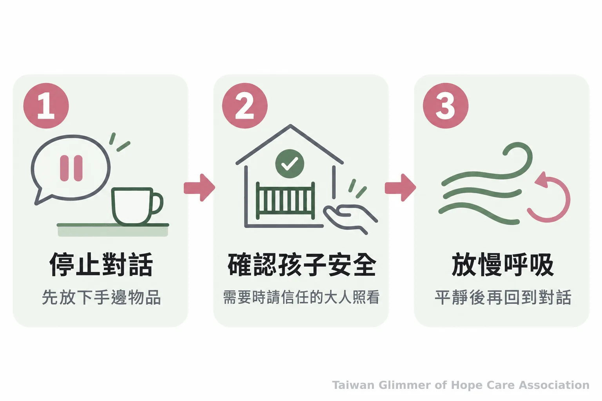
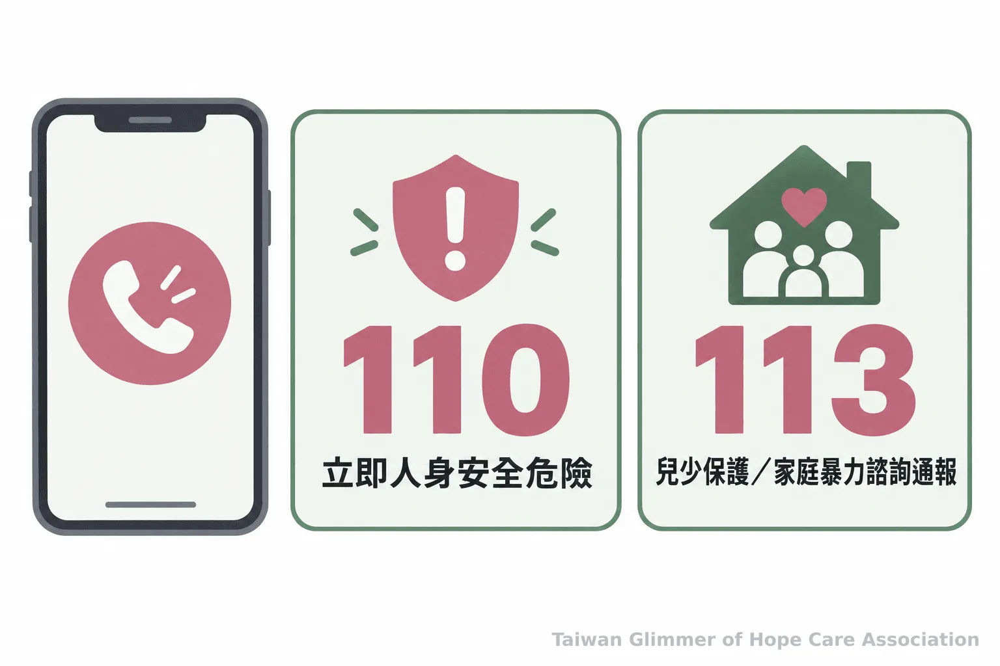

照顧者情緒快失控時，先做這 5 個安全步驟
孩子哭鬧、催促不動時，照顧者可辨認情緒警訊，先安排孩子安全，再暫停、修復衝突；也整理何時請人接手及 113、110 求助方式。
孩子哭鬧，出門時間已到，提醒幾次仍沒有動靜，照顧者可能發現自己聲音變大、手心發熱，腦中反覆出現責備。這些是可以停下來確認情況的訊號。育兒情緒升高時，先安排孩子安全，再讓親子衝突暫停。
一、辨認情緒升高時，身體先出現的變化
留意手心發熱、呼吸變急、說話音量升高或責備念頭變多，能提醒照顧者先停一下。這些是個人可能出現的警訊，不是心理診斷，也不一定每個人都相同。
有些人會咬緊牙關、肩膀僵硬，或同一句提醒越說越快。平時可回想衝突前身體和說話方式的變化，認得早期訊號，較有機會及早中斷對話。
衛生福利部指出，嬰幼兒哭鬧可能和生理需求、身體不適、需要陪伴或環境有關，也提醒照顧者留意自身情緒，身心狀況無法負荷時請其他家人接手。哭鬧的原因仍需依孩子與當下情況判斷；照顧者感到吃力時，也可以把求助納入照顧安排。
二、暫停前先確認孩子有人照看
先確認孩子所在位置與周遭環境安全，再決定自己如何暫停。若孩子年幼、需要持續看顧或無法安全獨處，先請可信任的成人接手陪伴。
先放下物品，停止爭辯，告訴孩子：「我需要停一下，等平靜一點再談。」孩子能在安全處等待時，照顧者可退到看得到孩子的位置；若孩子需要陪伴，就留在附近或請可信任成人接手。不可把孩子留在樓梯旁、浴室、車內等有危險的地方。
- 停下對話，把手上的物品放在安全處。
- 確認孩子有人照看；需要時請可信任成人接手。
- 在安全距離放慢呼吸，等情緒稍降再回到現場。
美國疾病管制與預防中心（CDC）的幼兒親職指引建議，照顧者先確保孩子與周遭安全，感到挫折時可以暫停並深呼吸；暫停時間要看情境而定，若需要離開較久，須安排其他可信任的照顧者陪著孩子。呼吸與暫停是可嘗試的調整方式，不能保證適用所有衝突或風險。

幾次緩慢呼吸，讓自己回到當下
照顧者可以把注意力放在腳踩地面的感覺，慢慢吸氣、讓吐氣稍長，再觀察自己是否能放低音量、聽完孩子一句話。若仍覺得情緒很高，就繼續留在安全位置，或請成人接手；不必為了完成一套步驟而勉強自己立刻回去談。
三、情緒稍降後，從承認行為開始修復
等自己較平穩後，可以先說明剛才做了什麼，再聽孩子的感受，最後講清楚接下來的安排。修復關係不要求孩子立刻原諒，也不必急著把衝突當作已經結束。
例如可以說：「剛才我提高音量，這是我要負責的事。你願意說說剛才的感覺嗎？」接著留時間讓孩子回答，不急著補充理由，也不要求孩子說「沒關係」。若孩子暫時不想談，可以告訴他，等準備好時仍願意聽。
聽完感受後，再說明下一步，例如先吃晚餐，稍後整理出門用品。若衝突反覆發生，可檢視疲累、時間壓力或照顧分工，找家人調整。CDC 也建議等雙方平靜後再談。
「當個人身心狀況無法負荷時，應請其他家人暫時接手照顧或尋求其他支援。」— 衛生福利部《孩子哭鬧有原因，用愛與耐心保護孩子更安心》
- 先留意自己的身體和語氣變化，辨認情緒正在升高。
- 暫停前先確認孩子安全；需要持續照看的孩子要有成人陪伴。
- 情緒平穩後承認自己的行為、聽孩子感受，再談下一步。
四、反覆擔心失控時，讓可信任的人接手
若反覆瀕臨失控、擔心自己會傷害孩子，或已經發生傷害，請立即讓可信任成人接手照顧並尋求協助。兒童需要優先確保照顧與環境安全。
衛生福利部社會及家庭署說明，113 保護專線全年 24 小時受理兒少保護、家庭暴力等通報與求助諮詢；有立即人身安全危險時先撥 110。不方便通話時，也可使用 113 線上諮詢或簡訊服務。擔心自己可能失去控制，就可以先請人陪同照顧。
台灣微光希望關懷協會理事長林秀霞說：「愛不是掛在嘴邊，必須有行動。」對照顧者來說，行動可以很具體：先選一位緊急時能聯絡的成人，告訴對方需要接手時如何聯絡、孩子在哪裡，以及怎麼安全照看。協會關注兒少與家庭，也提醒家長、教師和志工把安全與適當求助放在前面；志工與一般民眾不自行查案或代替專業人員作保護決策。

發現兒少疑似遭受不當對待時
若家長、教師、志工或其他民眾發現兒少疑似遭受虐待、疏忽或其他不當對待，可撥 113 諮詢或通報；有立即危險時先撥 110。記下自己親眼所見的時間、地點與情況即可，不要自行追問孩子細節、公開身分或在社群轉傳可辨識資訊，後續由主管機關與專業人員處理。
五、常見問題：暫停多久、孩子不肯分開、如何道歉
沒有適用所有家庭的固定時間，先以孩子有人照看、照顧者情緒稍降為準。孩子不能安全獨處時，照顧者留在附近，或請可信任成人接手。
常見問題
Q1：暫停需要幾分鐘？
沒有固定分鐘數。等自己可以放慢語速、聽孩子說話，再回到對話；若情緒仍高，就繼續留在安全位置或請人接手。
Q2：孩子不肯讓照顧者離開怎麼辦？
不必勉強孩子獨自等待。照顧者可以留在安全距離，減少爭辯；若孩子年幼或需要持續陪伴，請另一位可信任成人協助。
Q3：深呼吸後還是很生氣，代表方法沒用嗎？
呼吸只是可嘗試的調整方式，不保證每次都有效。若仍擔心自己會傷害孩子，先請成人接手並尋求協助。
Q4：衝突後要立刻要求孩子和好嗎？
不用。照顧者可以先承認自己的行為、聽孩子怎麼感受，讓孩子有時間整理，再一起討論接下來怎麼做。
Q5：什麼情況可以打 113？
有兒少保護或家庭暴力相關疑慮，需要諮詢或通報時可撥 113；若有立即人身安全危險，先撥 110。
官方親職衛教提供一般安全與求助方向；個人的警訊和暫停方式因人與情境而異，短暫暫停不能處理所有衝突或風險。今天可以先選一位緊急時能聯絡的成人，說明需要接手時的方式。
參考資料
-
衛生福利部社會及家庭署（2024）。〈113保護專線介紹〉。https://dep.mohw.gov.tw/DOPs/cp-1183-6499-105.html
-
衛生福利部（2024）。〈孩子哭鬧有原因，用愛與耐心保護孩子更安心〉。https://www.mohw.gov.tw/cp-4636-51149-1.html
-
U.S. Centers for Disease Control and Prevention（2026）。“Tips for Noticing and Naming Emotions.” https://www.cdc.gov/parenting-toddlers/noticing-and-naming/emotion-coaching.html
好好當家長｜系列三之 2
本文同步刊於 appi.news。